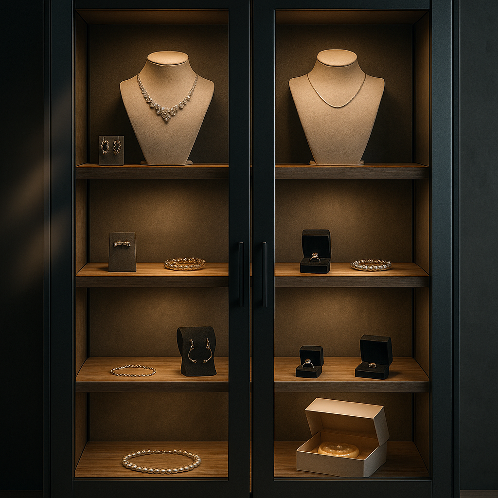

AI 매니저 소개
“안녕하세요! 저는 BESTIN AI 탐정입니다. 사건 현장의 단서를 분석해 범인을 추적할 준비가 되셨나요?”
- 모든 퍼즐은 실제 스마트 기기와 연동된 경험을 토대로 합니다.
- 단서를 잘 읽고 논리적으로 추리해보세요.
- 각 스테이지를 성공하면 다음 힌트를 얻을 수 있습니다.
1단계 – 범행 가능 시간대 찾기
출입 로그를 분석하여 진열장이 열려 있던 19:00–19:10 사이에 혼자 있던 사람을 찾으세요.
"진열장은 19:00–19:10 사이만 열려 있었습니다."

| 시간 | 이름 | 상태 |
|---|---|---|
| 18:54 | 이삿짐 팀장 | IN |
| 19:00 | 이삿짐 팀장 | OUT |
| 19:02 | 민지 | IN |
| 19:05 | 민지 | OUT |
| 19:08 | 설치기사 | IN |
| 19:22 | 설치기사 | OUT |
2단계 – 4자리 자물쇠
가장 짧게 머문 사람의 입·출 시간을 4자리 숫자로 입력하세요.
“가장 짧게 머문 자의 입·출 분(2자리+2자리)을 입력하라.”
| 이름 | 체류 시간 | 입·출 |
|---|---|---|
| 팀장 | 6분 | 1854-1900 |
| 민지 | 3분 | 1902-1905 |
| 설치기사 | 14분 | 1908-1922 |
3단계 – 은닉 위치 찾기
힌트에 따라 케이크 상자를 찾아 클릭하세요. 상자 안에 숨겨진 보석 모형을 회수해야 합니다.
"작별 케이크를 의심하라."
결과
엔딩 – 사건 해결
☆
☆
☆
☆
☆